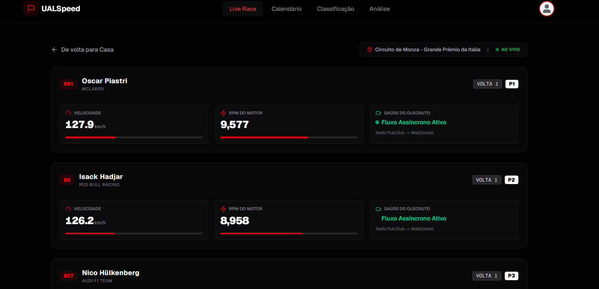
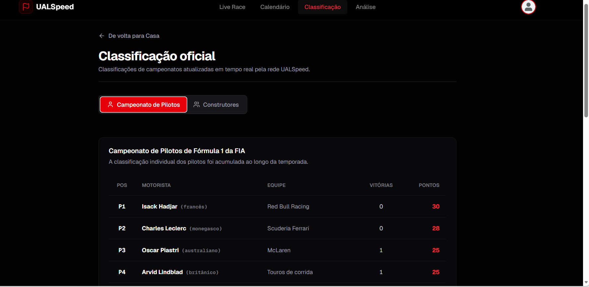
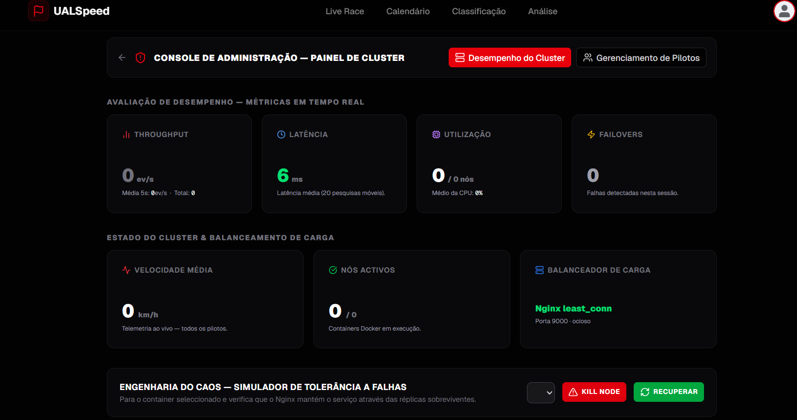
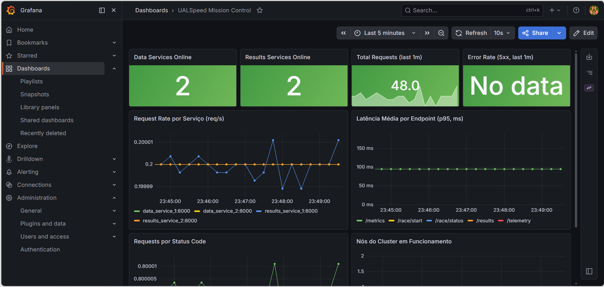

UALSpeed
Plataforma distribuída de dados de Fórmula 1 em tempo real, com réplicas de cada serviço, balanceamento de carga, telemetria por WebSocket, monitorização e testes de resiliência em que um nó é desligado de propósito.
A minha parte: infraestrutura. Docker Compose, Docker Swarm e Nginx como API gateway e load balancer.
Browser → Nginx (least_conn) → 2× FastAPI → Redis Pub/Sub → worker → WebSocket
- Docker Swarm
- Nginx
- FastAPI
- Redis
- PostgreSQL
- Prometheus
- Grafana
- Next.js




Repositório privado de grupo.